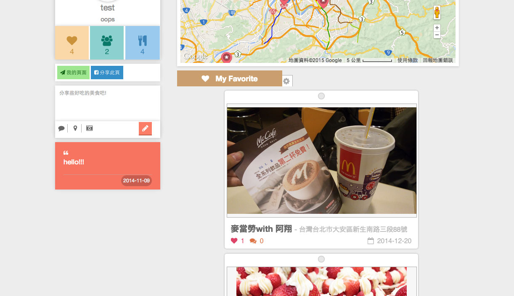
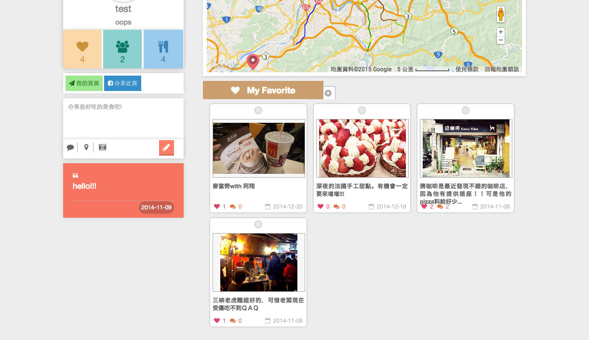
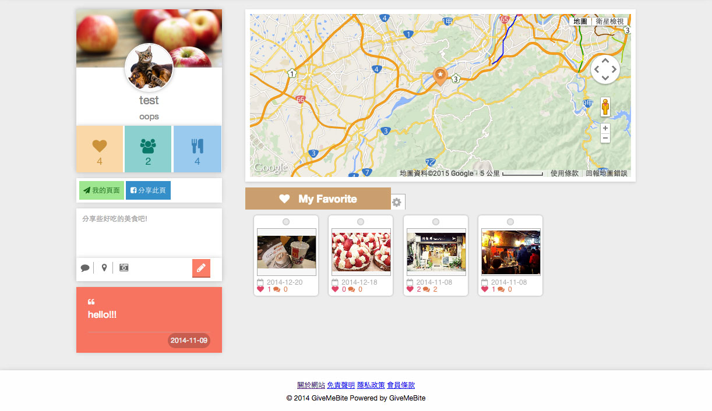
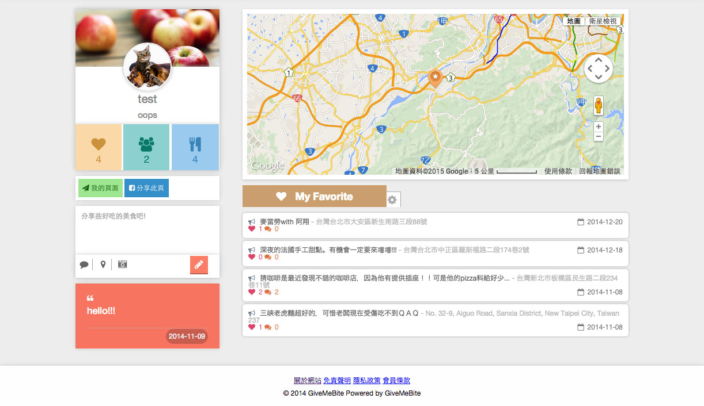
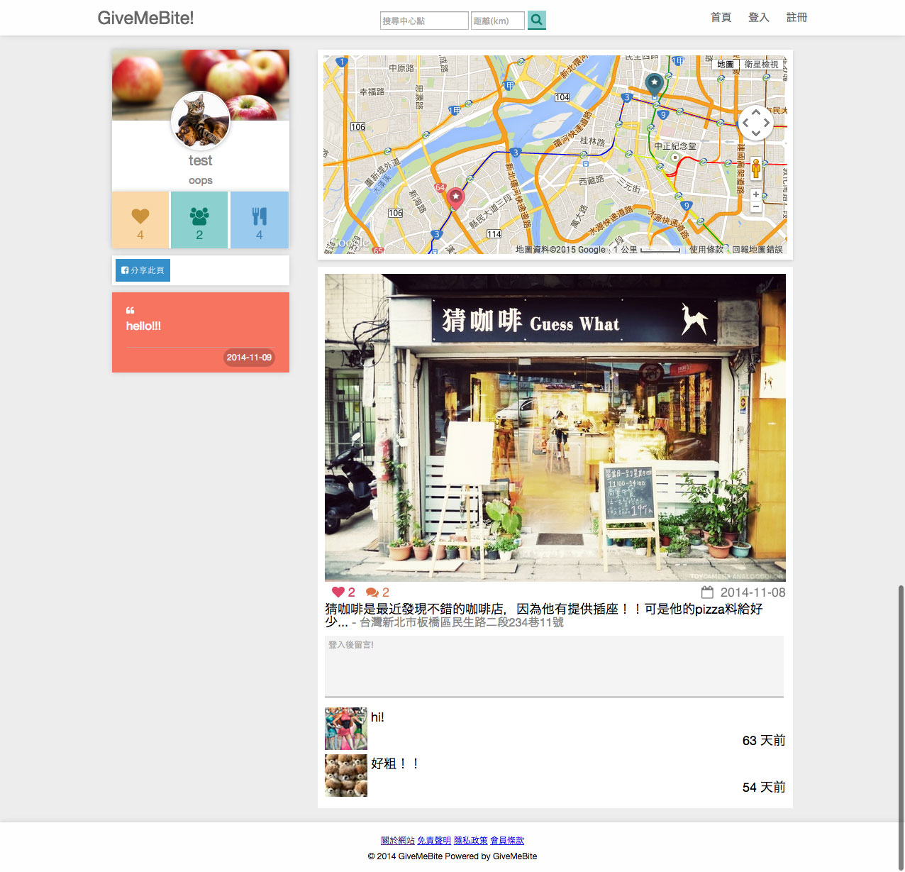
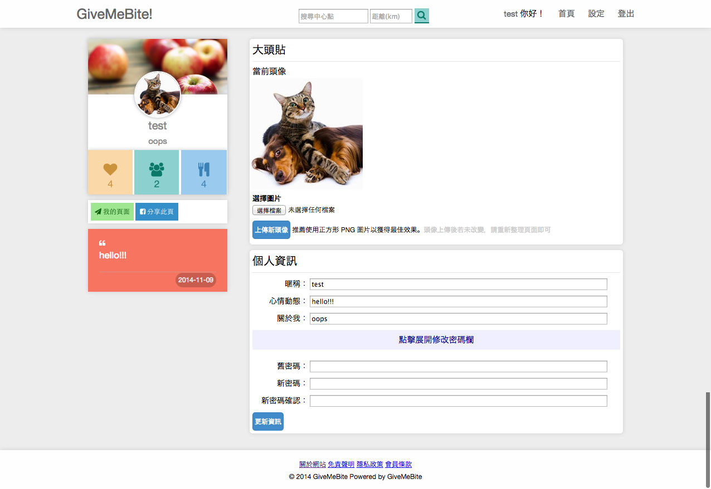
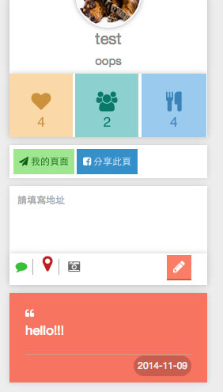
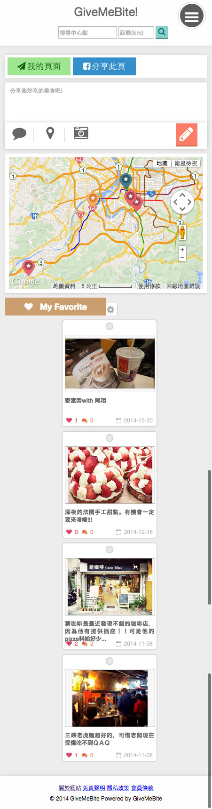

文章分享
givemebite 咬我啊 網站
- 2015-01-18
- Ming yu
- web

[前言...]
這個網站是為了練習ＲＯＲ以及ＡＷＳ，利用空閑時間把它架起來。從頭到尾都不假他人之手，獨立完成！
雖然說是為了練習ＲＯＲ和ＡＷＳ，但其實ＡＷＳ只有用到ＥＣ2的功能，而且只有用一年免費的部分。而網域的的部分也是因為當初github有個學生包，可以免費用一年 xxx.me 的網域。所以目前都是零成本ＸＤＤＤ(可是一年好像快到了，正在考慮要搬家還是繼續付費用aws。)
咬我啊，主要採用ＬＢＳ概念，替使用者搜尋附近的美食。使用者也可以上傳自己喜歡的美食，供別人搜尋討論。
首頁會隨機推薦會員，以及附近美食。
會員頁面會顯示會員發佈過的美食(lazy load 概念)，會員獲得多少個喜歡，發佈過多少個美食。並在地圖上顯示對應位置。

美食列表可以點選控制欄位(My favorite 旁的齒輪)，修改顯示樣式。




美食內容頁，可以留言討論，點擊喜歡，分享ＦＢ。

個人資料設定頁面。

發表ＰＯ文（敘述跟地址為必填，相片則會提示是否不填送出）。[紅色為不通過，綠色為通過。]

也有為了手機版設計的版面(簡易版RWD)。選單按鈕在手機裝置上，可以長按之後，進行拖移該按鈕。避免擋到資訊。

這網站全部由我一個人架設的，所以我想怎麼改怎麼玩就隨我高興ＸＤＤＤ。歡迎大家有意見或是問題都歡迎跟我討論～！
傳送門：givemebite 咬我啊